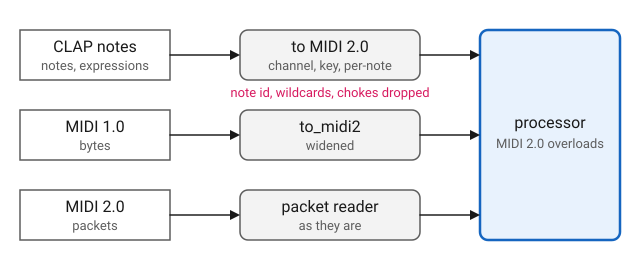

MIDI
Overview
midi_processor is a processor that receives MIDI from the host. A
plugin derives from it and handles the host’s MIDI messages by writing one
function call operator per message type, exactly as a Q MIDI processor
does:
class my_processor
: public qplug::midi_processor<my_processor>
{
public:
using midi_processor::operator();
void operator()(q::midi_2_0::control_change msg, std::size_t time);
};The class names itself as the template argument. That is how the base
reaches the derived class: for each message the host delivers, it calls
operator() on the derived class with the message and its time, and
overload resolution picks the operator for that message type. The using
declaration brings in the base’s catch-all, an overload for the base
message type that does nothing, so a message with no overload of its own is
ignored and a class writes only the overloads it wants.
The messages are MIDI 2.0, the types in q::midi_2_0: note_on,
note_off, control_change, pitch_bend and the rest, listed under
Function Call. A host may send MIDI as MIDI 1.0 bytes, as MIDI 2.0
packets, or as CLAP’s own note events. QPlug brings each of these to MIDI
2.0 before it reaches the overloads, so a plugin handles MIDI 2.0 and
nothing else, whatever the host sends. MIDI 2.0 is the superset of MIDI
1.0 and has room for what a CLAP note carries, so nothing is lost on the
way: a MIDI 2.0 message arrives as it is, a MIDI 1.0 one is widened, and a
CLAP note becomes the MIDI 2.0 messages for the same note. See
The Dialects.
A plugin that wants the smaller message set names q::midi_1_0::processor
as the second template argument and writes q::midi_1_0 overloads instead.
It receives every dialect too, best effort: MIDI 1.0 arrives as it is, MIDI
2.0 is narrowed to it, and what MIDI 1.0 cannot say, per-note pitch bend
among it, does not arrive. See MIDI 2.0 in a MIDI 1.0 Processor.
Which messages a plugin handles is its own business. An instrument handles
note_on and note_off, and as a rule pitch_bend. An effect may handle
control_change and nothing else. A processor that takes no MIDI does not
derive from midi_processor; a plain processor is offered no note input.
The overloads are called on the audio thread, where they must not block or
allocate. Each message arrives at the frame the host stamped it with, before
the call to process that begins on that frame, and time is that frame in
the host’s block. See
Events at the Sample
in processor.
For an example, the va_synth processors are instruments and handle four
messages, with midi an alias for q::midi_2_0:
void operator()(midi::note_on msg, std::size_t time);
void operator()(midi::note_off msg, std::size_t time);
void operator()(midi::control_change msg
, std::size_t time);
void operator()(midi::pitch_bend msg, std::size_t time);The Dialects
CLAP carries notes in three dialects: MIDI 1.0 bytes, MIDI 2.0 packets, and CLAP’s own note events. QPlug’s note input accepts all three and names MIDI 2.0 as its preference. The host chooses from there, and a preference is only a hint. Through clap-wrapper a VST3 build receives MIDI 1.0 bytes, never packets; an AudioUnit may receive packets. A plugin chooses no dialect, and does not see which one arrived.
Whichever arrives reaches the same overloads:

- MIDI 2.0 packets
-
Read by Q’s
packet_reader, which gathers what spans several packets, and dispatched as they are. - MIDI 1.0 bytes
-
Widened to MIDI 2.0 by Q’s
to_midi2. See MIDI 1.0 in a MIDI 2.0 Processor. - CLAP notes
-
A note-on or note-off becomes the MIDI 2.0 message for the same channel and key, with its velocity in 16 bits, and a note expression the per-note message of the same name. A plugin never sees a CLAP note as such. See CLAP Notes.
A Universal MIDI Packet is a container rather than a protocol of its own. It carries MIDI 1.0 voice messages, message type 0x2, alongside MIDI 2.0’s own, message type 0x4, so one connection carries both. A host sending packets may therefore send plain MIDI 1.0 notes, and those are widened like the bytes.
CLAP Notes
A CLAP note is addressed by its port, channel, key and note id, and any of
them may be -1, a wildcard for every voice that matches the rest. A note-on
or note-off with a definite channel and key becomes the MIDI 2.0 note_on
or note_off for that channel and key, its velocity, from 0 to 1, scaled
to 16 bits with 0 and 1 landing on 0 and 65535. A CLAP note-on of velocity
0 arrives as a note_on of velocity 0, which MIDI 2.0 reads as a quiet
note-on, not a note-off.
A note expression, addressed the same way, becomes the MIDI 2.0 message for the same note:
| CLAP expression | Arrives as |
|---|---|
Pressure, 0 to 1 |
|
Tuning, semitones |
|
Volume, 0 to 4 |
|
Pan, 0 to 1 |
|
Expression, 0 to 1 |
|
Brightness, 0 to 1 |
|
Vibrato, 0 to 1 |
|
What MIDI cannot address does not reach the processor:
-
A note or expression with a wildcard channel or key.
-
A choke, which silences voices rather than ending a note.
-
The note id. Two notes on the same channel and key are one key to the processor, as they are to MIDI.
MIDI 1.0 in a MIDI 2.0 Processor
A MIDI 1.0 message is widened to MIDI 2.0 as Appendix D.3 of the MIDI 2.0 specification says. The resolution scaling keeps the points a player feels exact: 0 lands on 0, 127 on 65535 or 4294967295, and the centre of a wheel on the centre.
| MIDI 1.0 message | Arrives as |
|---|---|
|
|
|
|
|
|
|
|
|
One |
|
One |
|
Nothing of their own. The bank waits for
the next |
|
|
|
|
|
|
The system messages |
Themselves, unchanged. |
MIDI 2.0 in a MIDI 1.0 Processor
A plugin built on q::midi_1_0::processor receives MIDI 1.0 bytes as they
are. A packet that holds a MIDI 1.0 voice message or a system message
arrives as that message, unchanged. A MIDI 2.0 voice message, a CLAP note
among them, is narrowed by Q’s to_midi1, as Appendix D.2 says:
| MIDI 2.0 message | Arrives as |
|---|---|
|
|
|
|
|
|
|
|
|
|
|
|
|
|
|
Four |
|
The same, with controllers 99 and 98. |
Relative controllers,
per-note controllers,
per-note management and
|
Nothing. |
Translation substitutes rather than adds. In a MIDI 1.0 processor a
MIDI 2.0 note_on becomes a MIDI 1.0 note_on and the original is not
delivered, so a q::midi_2_0::note_on overload written alongside is never
called. The reverse holds in a MIDI 2.0 processor.
|
System Exclusive
System exclusive that spans packets is gathered and arrives whole, in
either kind of processor: the 7 bit form as a q::midi_1_0::sysex_view,
the 8 bit form as a q::midi_2_0::sysex8_view. A message longer than 1024
bytes is dropped whole.
| A sysex view refers to the reader’s buffer and is valid only for the call. A processor that keeps a system exclusive message copies it. |
| System exclusive reaches a processor only from MIDI 2.0 packets. CLAP’s MIDI 1.0 system exclusive event is not delivered. |
Velocity Zero
MIDI 1.0 means a note-off by a note-on of velocity 0. A MIDI 2.0 processor
never sees one: the translation delivers it as a note_off, as Appendix
D.3.1 says, so the va_synth examples handle note_on without a special
case:
void va_synth_processor::operator()(midi::note_on msg, std::size_t)
{
// Sixteen bits. A MIDI 1.0 note on of zero velocity never gets here:
// the translation makes it the note off MIDI 1.0 means by it.
note_on(msg.key(), float(msg.velocity()) / 65535);
}A MIDI 2.0 note_on of velocity 0 sent by a MIDI 2.0 host is a quiet
note-on, not a note-off, and arrives as one.
A MIDI 1.0 processor receives the MIDI 1.0 message as it is, a note_on
with a velocity of 0, and treats it as a note-off itself. A CLAP or MIDI
2.0 note-on whose velocity scales to 0 reaches it as 1, so that it is not
mistaken for one.
Declaration
template <typename Derived, typename Base = q::midi_2_0::processor>
class midi_processor : public processor, public Base
{
public:
using Base::operator();
protected:
bool has_midi_input() const override;
void midi(q::midi_1_0::raw_message msg, std::size_t time) override;
void midi(q::midi_2_0::packet const& p, std::size_t time) override;
};Expressions
Notation
Derived-
A class derived from
midi_processor<Derived>. Base-
q::midi_2_0::processor, the default, orq::midi_1_0::processor: the protocol the overloads ofDerivedare written for. proc-
Object of type
Derived. msg-
A Q MIDI message of
Base’s protocol, e.g. `q::midi_2_0::note_on. raw-
Object of type
q::midi_1_0::raw_message. pkt-
Object of type
q::midi_2_0::packet. time-
A
std::size_t, the message’s frame in the host’s block.
Deriving
| Expression | Semantics |
|---|---|
|
Make |
|
The same, handled as MIDI 1.0. |
|
In |
midi_processor is a processor, and everything that page describes
applies. An instrument also says it has no audio input, through
channels().
Function Call
| Expression | Semantics | Return Type |
|---|---|---|
|
Handle one message. Called on the
audio thread, for each message
|
|
The messages are Q’s. For a MIDI 2.0 processor, in q::midi_2_0: the
voice messages note_on, note_off, poly_pressure, control_change,
program_change, channel_pressure, pitch_bend, registered_controller,
assignable_controller, relative_registered_controller,
relative_assignable_controller, registered_per_note_controller,
assignable_per_note_controller, per_note_pitch_bend and
per_note_management; the stream messages; and sysex8_view. The system
messages and sysex_view come from q::midi_1_0, since MIDI 2.0 carries
them unchanged: song_position, song_select, tune_request,
timing_tick, start, continue_, stop, active_sensing and reset.
For a MIDI 1.0 processor, in q::midi_1_0: the voice messages note_on,
note_off, poly_aftertouch, control_change, program_change,
channel_aftertouch and pitch_bend, the system messages above, and
sysex_view; and from q::midi_2_0, sysex8_view.
MIDI
| Expression | Semantics | Return Type |
|---|---|---|
|
True, so the host is offered a note input. |
|
|
Bring a MIDI 1.0 message to
|
|
|
Read a MIDI 2.0 packet, bring what
it carries to |
|
QPlug calls these, and calls midi on the audio thread. They are protected,
and Derived overrides them only to take MIDI in some other way.